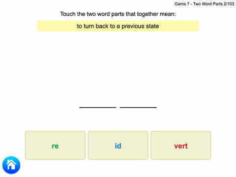
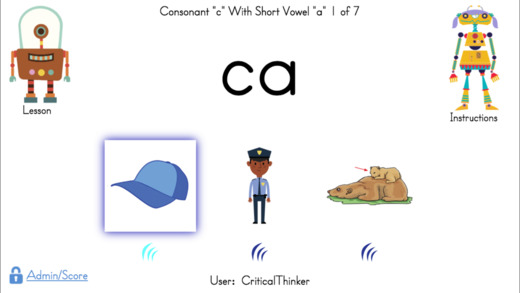
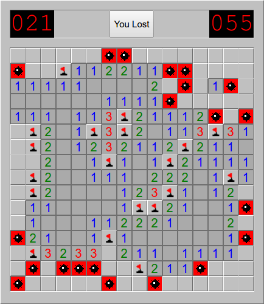
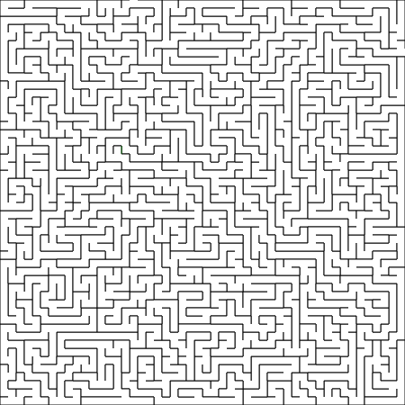
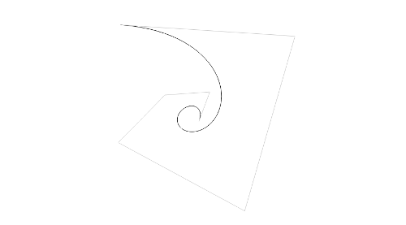
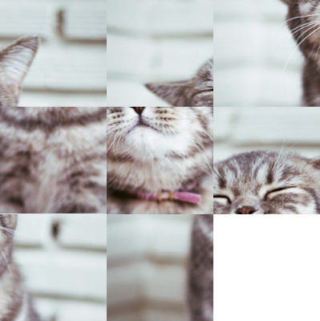
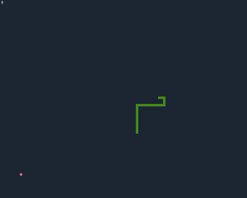

About
(541) 217-7409
My name is James Meyers and I am a full stack web developer with a focus on responsive front-end solutions.
Skills
General
- Git
- Linux/Unix command line
- Test-driven development
Front-end Development
- JavaScript (es2015+, React, Vue, Backbone, jQuery, etc.)
- HTML5
- CSS3
- SCSS/SASS
- Phonegap/Cordova
- Electron
- Webpack
- Babel
- Mocha
Back-end Development
- Node.js
- Python
- MySQL/PosgreSQL
- Express
- Socket.io
Projects
Word Roots Flashcards™ (4 products)
Word Roots teaches the meaning and spelling of roots, prefixes, and suffixes commonly used in English. Learning these word elements dramatically improves spelling and the ability to decode unfamiliar words. The activities focus on using these words in context to help students incorporate each word into their vocabulary and retain the correct spelling. There are periodic reviews to make sure students retain what is taught in the lessons. Word Roots books will add hundreds of words to your students' vocabulary and greater depth to their thinking and writing.
Fun-Time Phonics!™
Available on Windows, Android, and iOS
This multi-user software app is a fun, comprehensive reading program based on findings of the National Reading Commission. It uses two robots to teach lessons and activities to show children that spoken words are composed of individual sounds, and those sounds are written with letters. It emphasizes sound/spelling patterns, vocabulary, and comprehension, not memorization. The colorful game-like activities engage students through listening, thinking, speaking, and reading.
Pump Dashboard
Software for controlling salt water pumps based on high tide data for the Oregon Institute of Marine Biology.
React Minesweeper
A clone of Microsoft's Minesweeper written using React.js.
Maze Generator
An animated depth-first maze and solution generator written in JavaScript.
Bézier Curve Generator
An interactive higher order Bézier curve generator
Sliding Tile Puzzle
A sliding tile puzzle written in Vanilla JavaScript.
Snake
The classic snake arcade game written in Vanilla Javascript.